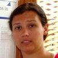

Perhaps the most important tool for this class is Piazza, an online forum that is accessible only to you, your fellow classmates, and the course staff. On Piazza, you can post a question annonymously and get an answer as soon as anyone on the course staff has a free moment. Our average response time is about ten minutes. Note, questions posted after midnight may not be answered until the following day.
The staff also offers weekly office hours if you'd like to get help in person. We will gladly look at your code or review old exams with you. You're welcome to attend any staffmembers' office hours, regardless who your preceptor is. Princeton also hires undergraduate teaching assistants to supplement office hours.
Warning. This schedule may change as circumstances dictate. Please check this calendar again immediately before going to office hours.
Worry not my dear soul. If you've missed your precept, or you're planning to miss a precept, we'd like you to know that you're free to attend any other COS 126 precept you wish. Keep in mind, if you missed a Tuesday precept, you can go to any precept on Tuesday or Wednesday to get the same instructional content. If you're going to miss a Friday precept, you can go to any Thursday precept or other Friday precept. Here's a complete list of precepts.
|
Tues./Thurs. 12:30-1:20pm |
P01 with Donna Gabai in Friend 108 |
P01A with Maia Ginsburg in Friend 109 |
P01B with Andrea LaPaugh in Friend 009 |
|
|---|---|---|---|---|
|
Tues./Thurs. 1:30-2:20pm |
P02 with Dan Leyzberg in Friend 108 |
P02A with Stephen Cook in Friend 109 |
P02B with Andrea LePaugh in Friend 009 |
P02C with Jordan Ash in Friend 111 |
|
Tues./Thurs. 2:30-3:20pm |
P01 with Donna Gabai in Friend 108 |
The nature of the curriculum in 126 is cumulative, such that if a student falls behind, they will need to first catch up with what they missed in order to understand the concepts currently being covered. If you find yourself falling behind, be proactive. Contact your preceptor as soon as possible to schedule a one-on-one meeting to review the material. It is the job of the preceptor to be available for his or her students that need review.
COS 126 is staffed by a mix of professors, lecturers, and graduate students. Below you will find our contact info, precept schedules, and office hours. Note, it is almost always more appropriate to post your question on Piazza rather than emailing it to any single staffmember. Also note that
| NAME | PRECEPT(S) | OFFICE HOURS | |
|---|---|---|---|
 Robert Sedgewick rs@cs.princeton.edu |
L01 -- Lecture. Tuesdays & Thursdays 10:00-10:50am in McCosh 10 |
Tuesdays & Thursdays 11:00am-1:30pm in CS 319 |
|
 Donna Gabai dgabai@cs.princeton.edu Co-Lead Preceptor |
P01 Tuesdays & Thursdays 12:30-1:20pm in Friend 108 |
P06A Wednesdays & Fridays 2:30-3:20pm in Friend 109 |
Sundays 7:00-9:00pm in Friend 017 |
|
Maia Ginsburg maia@cs.princeton.edu |
Co-Lead Preceptor P01A Tuesdays & Thursdays 12:30-1:20pm in Friend 109 |
P05A Wednesdays & Fridays 1:30-2:20pm in Friend 109 |
Thursdays 1:30-2:00pm Fridays 2:30-3:00pm Mondays 2:00-3:00pm in CS 205 |
 Andrea LaPaugh aslp@cs.princeton.edu |
P01B Tuesdays & Thursdays 12:30-1:20pm in Friend 009 |
P02B Tuesdays & Thursdays 1:30-2:20pm in Friend 009 |
Thursdays 2:30-4:30pm in CS 304 |
 Dan Leyzberg dan.leyzberg@princeton.edu |
P02 Tuesdays & Thursdays 12:30-1:20pm in Friend 009 |
P03 Tuesdays & Thursdays 1:30-2:20pm in Friend 009 |
Thursdays 2:00-4:00pm in CS 304 |
|
Stephen Cook stcook@princeton.edu |
P02A Tuesdays & Thursdays 1:30-2:20pm in Friend 109 |
Mondays 4:30-6:30pm in CS 001B |
|
 Jordan Ash jordanta@cs.princeton.edu |
P02C Tuesdays & Thursdays 1:30-2:20pm in Friend 111 |
Mondays 1:00-3:00pm in CS 004 |
|
 Shaoqing (Victor) Yang sy2@princeton.edu |
P03A Tuesdays & Thursdays 2:30-3:20pm in Friend 110 |
Wednesdays 1:00-3:00pm in 221 Nassau St., first floor |
|
 Katie Edwards ke@princeton.edu |
P04 Tuesdays & Thursdays 7:30-8:20pm in Friend 108 |
Tuesdays 11:30am-12:30pm Thursdays 6:00-7:00pm in CS 244 |
|
|
Doug Clark doug@princeton.edu |
P05 Wednesdays & Fridays 1:30-2:20pm in Friend 108 |
P06 Wednesdays & Fridays 2:30-3:20pm in Friend 108 |
Fridays 3:30-5:30pm in CS 244 |
|
Ted Brundage tobrund@princeton.edu |
P05B Wednesdays & Fridays 2:30-3:20pm in Friend 110 |
Fridays 3:30-5:30pm in CS 244 |
|
|
Young Kun Ko yko@cs.princeton.edu |
Office hours only. |
Mondays 11:00am-1:00pm in CS 103A |
|
 Nevin Li nhli@princeton.edu |
Office hours only. |
Mondays 3:00-5:00pm in 221 Nassau St., First Floor |
|
 Colin Watson colinw@princeton.edu |
ISC-only Precept Thursdays 3:00-4:20pm in Icahn 200 |
ISC-only Office Hours Fridays 3:00-5:00pm in Moffet 430A |
|
|
 Emily Nelson emilysn@princeton.edu |
ISC-only Precept Fridays 3:00-4:20pm in Icahn 200 |
ISC-only Office Hours Thursdays 5:00-7:00pm in Icahn 132 |
|